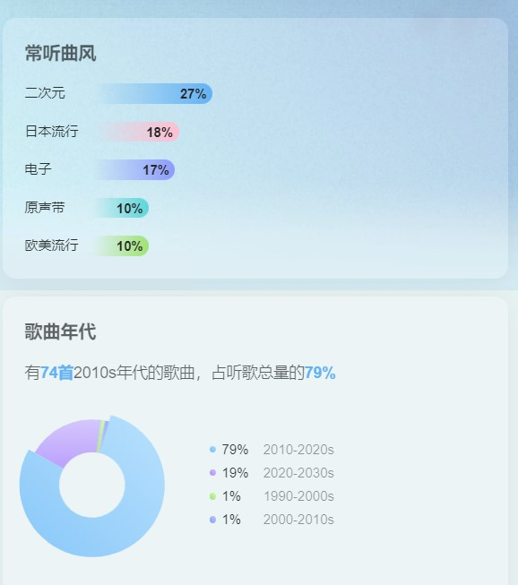
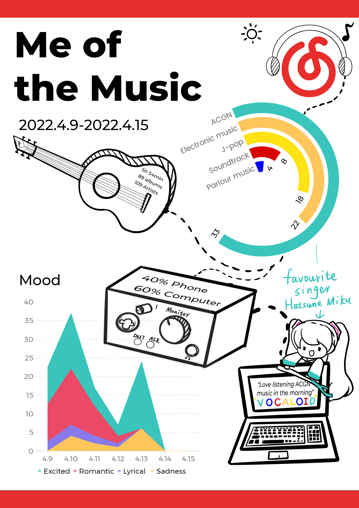

I finally decided to choose this piece as my final work.
For my design, inspiration comes from the app I chose ---- NetEase Cloud Music. I tried to convert the music and songs I listened to in 4.9-4.15 and draw the data from the weekly report of NetEase Cloud Music summary to adobe Illustrator and put them on posters. In class, some students suggested to me that headphones could be added, from which I thought of speakers, guitars (I often use iPad as an effect device to listen to music with headphones), musical notes and other elements, and then I connected them in series, so as to have a sense of story.
These three pictures show the chart of NetEase Cloud Music recording my listening to music from April 5 to April 19. I recorded my feelings when listening to music with MindMap.
After I drew the above data in Illustrator, I imported it into Photoshop for collage to form a preliminary layout.
